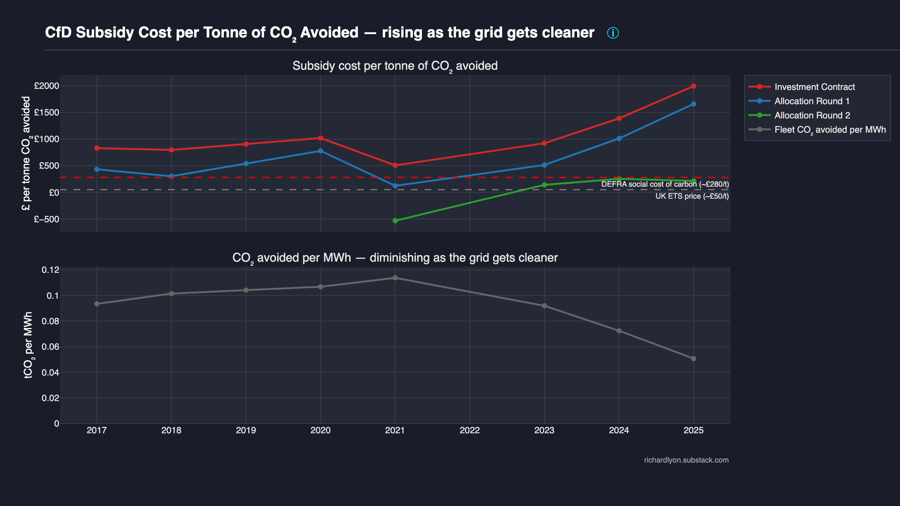

Subsidy per tonne of CO₂ avoided¶
£/tCO₂ by allocation round over 2017–2025, benchmarked against DEFRA Social Cost of Carbon and UK ETS auction prices. The scheme's climate value per pound is decaying; the plotted rounds (Investment Contracts, AR1, AR2) already sit well above the UK ETS ceiling, and the denominator of tCO₂ avoided per MWh is still falling.

What the chart shows¶
A two-panel diagnostic.
Top panel: CfD subsidy cost per tonne of CO₂ avoided, £/tCO₂ by allocation round by year (2017–2025, with 2022 excluded). Three lines: Investment Contract (red), Allocation Round 1 (blue), and Allocation Round 2 (green). Later rounds (AR3–AR6) do not yet have sufficient generation history to render meaningfully and are omitted. Two horizontal reference lines span the panel:
- DEFRA Social Cost of Carbon — the UK government's own published valuation of avoided-CO₂ damage used across policy appraisal. Central value ≈ £280/tCO₂ (2024 money).
- UK ETS auction price — the price emitters currently pay at auction for a tonne of CO₂ emissions allowance. Recent range ≈ £40–£70/tCO₂; the chart uses ≈ £50/tCO₂ as a representative marker.
Bottom panel: Fleet-wide tCO₂ avoided per MWh of CfD generation, year by year. A single falling curve — each MWh displaces less carbon now than it did in 2017, because the UK grid's marginal generator has shifted away from unabated coal and older CCGT towards newer CCGT + other lower-carbon sources.
The argument¶
Even if you accept the climate premise of the CfD scheme, CfDs are not a cost-effective way to decarbonise — and the ratio is getting worse as the grid gets cleaner.
Three points:
-
The £/tCO₂ ratio is the only honest climate-efficiency metric for a subsidy that is explicitly sold as a decarbonisation tool. Every other framing — strike price, total £bn spent, capacity factor — dodges the question "what are we buying with the money?" The scheme is buying avoided carbon. This chart divides one by the other.
-
The ratio is rising over time. That rise is not driven by the numerator (annual CfD payments per round are broadly stable year-on-year in real terms) but by the denominator collapsing in the bottom panel: as the UK grid decarbonises, each new renewable MWh displaces a smaller marginal amount of CO₂. A CfD signed in 2017 was competing against a dirtier grid; a CfD signed in 2024 competes against a much cleaner one. The same strike price produces less avoided carbon per pound spent.
-
Against both reference ceilings the recent-round CfDs look expensive. The UK ETS line — the price emitters actually pay at auction today to emit a tonne — sits far below the £/tCO₂ delivered by recent allocation-round cohorts. The DEFRA SCC line is higher but is a policy valuation, not a market price. When your subsidy costs more per tonne avoided than the emitter's marginal cost of emitting, you are buying abatement at a premium that an auction of UK ETS allowances would clear more cheaply.
The scheme was designed in an era when displaced carbon per MWh was assumed roughly constant. The grid has moved; the assumption has not. The forward implication for AR7 (2026 auction) is that its £/tCO₂ will be worse still — because by the time AR7 units generate, the displaced margin will be even cleaner.
Methodology¶
Source: LCCC Actual CfD Generation and avoided GHG emissions (daily
settlements; the LCCC directly reports Avoided_GHG_tonnes_CO2e per row
using the DESNZ grid-average emission factor for the displaced margin).
Top panel per allocation round per year:
The numerator is the levy channel only — what consumers top up via the Supplier Obligation levy line on their bill. The wholesale channel is what consumers would be paying for any MWh regardless of generator technology; only the levy is CfD-caused expenditure and is the honest numerator for a policy-efficiency ratio. (The combined wholesale + levy total appears in the Cost theme's cfd-vs-gas-cost diagnostic — a different question.)
Bottom panel, fleet-wide:
2022 exclusion. During the gas crisis, CFD_Payments_GBP went
negative for most rounds as wholesale exceeded strike. Dividing a
negative number by a positive one produces a negative £/tCO₂ that
inverts the chart and has no policy interpretation. 2022 is excluded
from the top panel by construction; the bottom panel is unaffected
because its denominator CFD_Generation_MWh is always positive.
Reference-line values. DEFRA SCC 2024 central = £280/tCO₂. UK ETS 2024–25 auction average ≈ £50/tCO₂. Both are marker values, not time-varying — the chart prioritises readability over a moving benchmark. See shared gas-counterfactual methodology for the carbon-price context that feeds the wider scheme-cost narrative, and the Efficiency theme methodology for the ratio arithmetic.
Caveats¶
Avoided_GHG_tonnes_CO2euses the DESNZ grid-average marginal emission factor. This is the government's published convention but differs from a strict merit-order model that would identify exactly which plant's dispatch was displaced. A stricter merit-order approach would typically produce a lower denominator in recent years — which would make the chart's argument stronger, not weaker.- 2022 appears as a gap, not an anomaly. The reader sees a missing point for 2022 in every top-panel line. This is the design: a negative ratio would lie about what happened, and zero would mislabel a clawback year as a zero-climate-impact year.
- SCC is a policy convention. The £280/tCO₂ DEFRA figure is an appraisal value, not a market price. Interpret the SCC line as a benchmark for "how much the government says carbon is worth" rather than "how much carbon actually trades for".
- The displaced margin will eventually stop being gas. As the grid
gets still cleaner the denominator may approach zero and then
overshoot — a renewable MWh may displace another low-carbon MWh,
at which point
Avoided_GHG_tonnes_CO2eper MWh ceases to be a coherent policy metric. The chart tracks this drift toward that endpoint. - AR3–AR6 are absent. They are omitted only because their cumulative generation is too small to produce stable per-year ratios. Once AR3 crosses a few TWh of cumulative output, the chart can be extended.
Data & code¶
- CfD data — LCCC Actual CfD Generation and avoided GHG emissions
(includes LCCC-reported
Avoided_GHG_tonnes_CO2eper row). - DEFRA Social Cost of Carbon — Valuing greenhouse gas emissions in policy appraisal (GOV.UK)
- UK ETS auction prices — Participating in the UK ETS (GOV.UK)
- Chart source —
src/uk_subsidy_tracker/plotting/subsidy/subsidy_per_avoided_co2_tonne.py - Tests —
tests/test_schemas.py(validates thatCFD_Payments_GBP,Avoided_GHG_tonnes_CO2e, andCFD_Generation_MWhall conform to the LCCC Actual CfD Generation schema this chart aggregates over),tests/test_aggregates.py(row-conservation on the round × year groupby)
To reproduce:
See also¶
- Efficiency methodology — formal £/tCO₂ formula, reference-line value provenance, SCC vs ETS discussion.
- Gas counterfactual — shared carbon-price methodology behind the wider Cost / Efficiency narrative.
- Cost theme — total-pound numerator context; especially cfd-vs-gas-cost for the wholesale + levy total.
- Capture ratio — why new wind produces diminishing economic returns alongside its diminishing carbon returns.